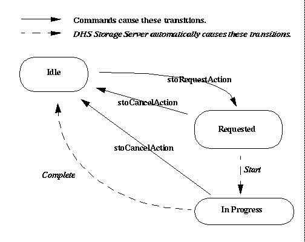

Notify Action
Notification involves informing the requesting server that the
media request has completed.
In the case of an archive media request, the Data Server which
made the request, is notified that the data contained on the media
unit(s) is now safely in the archive
and may be deleted from the Data Server's storage area. Note that
cdIngest should be run to ingests the CD(s) into the archive
before the notify action is initiated.
In the case of a user
media request, the OCS will be notified that the media request has
completed, and that a set of transportable media has been created
for the user.
Viewing Retrieval Information
There are two status records associated with retrieval. They are:
- Notify Value.
Indicates if a media unit (archive) or media request (user)
is ready for notification.
- Notify State.
Indicates the current state of the notify action, expected
values are given below.
All status records are displayed on the
Storage Server's window
and on the Request window. The
Request window displays each of the status records in a non-editable
box. The subsystem window uses a combination of text
and colours to portray this information.
Obtaining Further information
Further information describing the media units ready for notification,
can be obtained by pressing
the "notify" information button on the
Storage Server window.
This will display the Storage Server's
Action Information window.
Changing Notify Information
Notify information can not be changed directly. However, it does
change when during
notification.
Notify information can also change during a
reset or an
Initialize command.
Expected Notify State Values
The expected notify state values are listed in the table below.
Given any particular state there is one or more states the action
can move to. The state transition
diagram below depicts the allowed moves (transitions).
Expected Notify State Values
| Value |
Interpretation |
| IDLE |
No processing is currently being performed on the data
to be notified. |
|---|
| REQUESTED |
A notification is waiting for processing.
|
|---|
| IN-PROGRESS |
A notification is currently being processing |
|---|

Shannon Jaeger
Last modified: Fri Jul 24 10:20:39 PDT 1998